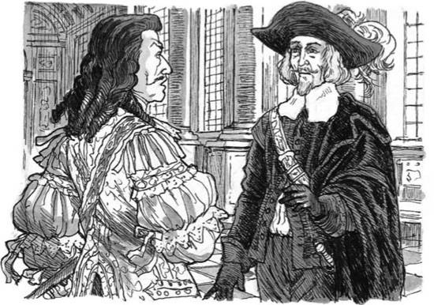
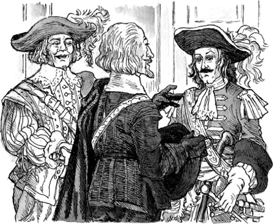

Fouquet đang đợi trong phòng mình. Cánh cửa mở ra và Aramis cùng D'Artagnan bước vào.
D'Artagnan nói: "Thưa ngài, tôi sẽ không bắt giữ ngài đâu. Nhà vua đã ra lệnh cho tôi rồi. Người cảm ơn ngài về buổi tiệc. Người là bạn tốt của ngài."
Fouquet bất ngờ. Ông không đáp lại.
Sau đó, Aramis nói với D'Artagnan.
Ông ta nói: "Sáng nay anh sẽ bận lắm, thưa đội trưởng. Tôi sẽ nói chuyện với ngài Fouquet."
D'Artagnan chào tạm biệt rồi để lại Aramis và Fouquet ở lại với nhau. Fouquet lập tức lên tiếng.
Ông ta hỏi: "Chuyện gì xảy ra vậy?". "Nhà vua muốn bắt giữ tôi, nhưng giờ tôi lại được tự do. Tôi không hiểu được."
Aramis nói: "Kho bạc thiếu mất 13 triệu franc. Nhà vua biết về chuyện đó rồi. Colbert đã nói với người."
Fouquet nói: "Đúng vậy, tiền đã mất. Nhưng bộ trưởng tài chính của Louis XIII đã đánh cắp số tiền đó."
Aramis trả lời: "Nhà vua không tin điều đó. Nhà vua nghĩ, "Fouquet là tội phạm". Còn Colbert thì muốn người nghĩ như vậy. Colbert muốn trở thành Bộ trưởng Tài chính Chính thức.
Fouquet nói: "Vậy tại sao bây giờ tôi lại được tự do? Ngài có một bí mật, thưa Giám mục ạ. Nhà vua đã nói gì với ngài? Tôi biết Louis không tin tưởng ngài đâu."
Aramis nói: "Giờ đây nhà vua tin ta rồi."
Fouquet bắt đầu hiểu ra. Ông ta nói: "Có một bí mật giữa ngài và Nhà vua, đúng không? Xin hãy kể tôi nghe về điều đó."
Sau đó, Aramis kể cho Fouquet về câu chuyện của mình. Vị bộ trưởng của Nhà vua lắng nghe trong vài phút. Nhưng đột nhiên, ông ta không muốn nghe nữa.
Ông ta vừa nói vừa đặt tay lên thanh kiếm: "Nhưng Nhà vua -"
Aramis nói: "Nhà vua nào chứ? Một người ghét ngài, thưa ngài Fouquet. Một người khác thì lại thích ngài.
Fouquet nói: "Ngài vua - Nhà vua ngày hôm qua."
Aramis nói: "Nhà vua ngày hôm qua á? Hãy chắc chắn về điều này đi. Nhà vua ngày hôm qua đang ở trong Bastille đấy. Đêm qua, ta đã đưa người đến đó!"
Fouquet nói: "Lạy Chúa! Đó là một tội ác. Là tội ác đối với vị khách của tôi, Nhà vua của tôi!"

Aramis nói: "Nhưng Vua Louis muốn bắt giữ ngài, và giết ngài. Giờ thì người đã ở trong ngục, còn ngài vẫn sống."
Fouquet nói: "Ngài là kẻ phản bội! Tôi sẽ giết chết ngài!"
Ông ta giơ kiếm lên. Rồi ông ta ném nó xuống đất.
Ông ta nói: "Không! Tôi không thể giết ngài được. Ngài muốn giúp tôi mà. Nhưng tôi sẽ đến Bastille. Tôi sẽ thả Nhà vua ra. Ngài phải rời khỏi ngôi nhà này, Aramis ạ. Và ngài phải rời khỏi Pháp. Giờ tôi sẽ đến Paris. Tôi sẽ không quay lại trong vòng bốn giờ tới. Và bốn giờ sau, ngài phải ở thật xa nơi này."
Aramis nói: "Bốn giờ!"
Fouquet nói: "Ta hứa với ngươi đấy. Ngươi có bốn giờ. Sau đó, binh lính Nhà vua sẽ cố tìm ngươi. Hãy lấy những con ngựa tốt nhất của tôi. Cưỡi ngựa đến bờ biển. Sau đó, đi thuyền đến Belle-Isle. Đảo đó là của tôi. Không ai làm gì ngươi ở đó được đâu. Đi ngay đi!"
Fouquet rời khỏi phòng.
Aramis cảm thấy tức giận và không vui. Kế hoạch của ông ta đã không thành công.
Aramis nghĩ bụng: "Mình có nên một mình đến Belle-Isle không? Mình có nên đưa Philippe đi cùng không? Không, mình không thể. Philippe đã làm tù nhân trong tám năm nay, và anh ấy có thể lại trở thành tù nhân lần nữa. Nhưng mình sẽ không bỏ rơi người bạn thân Porthos của mình. Anh ấy phải đi cùng mình."
Giám mục vội đến phòng của Porthos.
Ông ta nói: "Porthos, giờ chúng ta rời khỏi Vaux. Chúng ta sẽ cưỡi ngựa đến bờ biển. Và chúng ta sẽ cưỡi nhanh hơn bao giờ hết."
Porthos khoác áo choàng rồi cầm thanh kiếm của mình lên. Bên ngoài phòng, hai người gặp D'Artagnan.
D'Artagnan hỏi: "Các người rời khỏi Vaux ư? Các người định đi đâu thế?"
Aramis nói: "Chúng tôi nhận được lệnh từ Nhà vua, D'Artagnan ạ. Anh đã nói chuyện với Fouquet chưa?"
D'Artagnan nói: "Đã nói, cách đây vài phút. Ông ta đang ngồi trên xe ngựa, đi trên đường."
Aramis hỏi: "Ông ta nói gì với anh?"
D'Artagnan trả lời: "Ông ta chào tạm biệt. Không nói gì thêm nữa."
Aramis nói: "Đi thôi, Porthos. Chúng ta đã sẵn sàng rồi sao? Chúng ta phải làm theo lời của Nhà vua."
